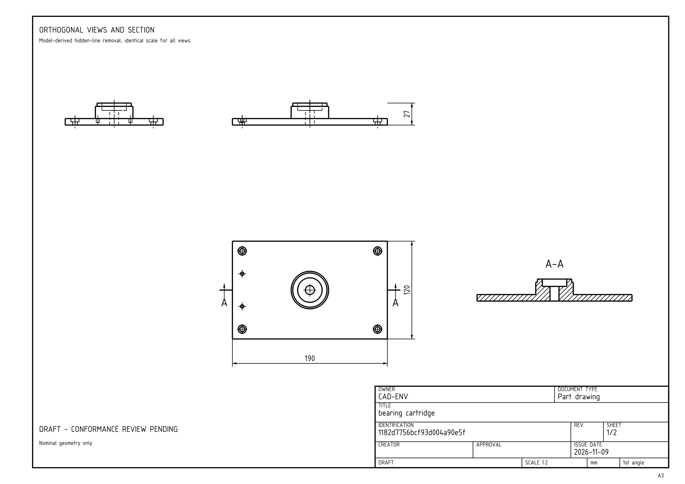

ISO / ГОСТ · A3DATA GENERATION / 7 MIN READ
One part, two drawing sets.
How we generate paired ISO and GOST drawing profiles, feed several sheets to a vision model and check the reference part in FreeCAD.
Read the article ↗PROJECT NOTES
Changes to the environment, examples from the datasets and what we learn from testing the models.

ISO / ГОСТ · A3DATA GENERATION / 7 MIN READ
How we generate paired ISO and GOST drawing profiles, feed several sheets to a vision model and check the reference part in FreeCAD.
Read the article ↗Also changed
Added adapter flanges, bearing cartridges, motor mounts, spacer bushings, blind covers and alignment fixtures. The pilot contains 18 training parts and 18 separate validation parts, each in both drawing profiles.
On 20 held-out parts, strict success rose from 0 to 3 with ISO inputs and from 0 to 6 with GOST inputs. Both profiles use the same geometry. The starting checkpoint already had CAD training; this is not a raw-model comparison.
FreeCAD and CadQuery remain supported. The optional third backend has been removed. Technical fonts now download during installation with fixed hashes; the repository and new drawing bundles do not include font binaries.
Dated notes, not a live training dashboard. Results are reported with their dataset and checkpoint.